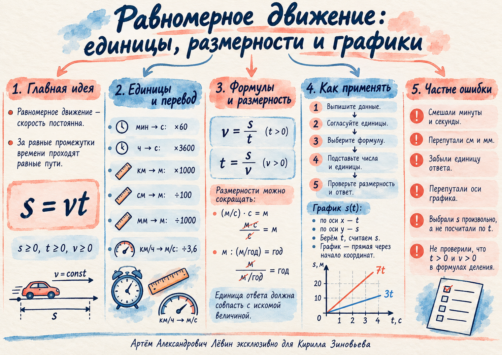

Улитка: два корректных пути решения
v = 1,4 мм/сt = 5 мин = 300 снайти s
Через СИ: 1,4 мм/с = 0,0014 м/с.
В исходной единице длины: 1,4 мм/с · 300 с = 420 мм = 0,42 м.
27.09.26 · Кирилл Зиновьев · 7 класс · Артём Александрович Лёвин
Главная задача занятия — уверенно согласовывать единицы, видеть физический смысл формулы и читать зависимость пути от времени как график.
В стандартном расчёте удобнее работать в СИ. Если единицы уже согласованы и приводят к требуемому ответу, лишний перевод не нужен.
| Переход | Действие | Пример из занятия |
|---|---|---|
| мин → с | × 60 | 5 мин = 300 с |
| ч → с | × 3600 | 2 ч = 7200 с |
| км → м | × 1000 | 3,5 км = 3500 м |
| см → м | ÷ 100 | 3,5 см = 0,035 м |
| мм → м | ÷ 1000 | 3,5 мм = 0,0035 м |
| км/ч → м/с | ÷ 3,6 | 72 км/ч = 20 м/с |
Поэтому числовое значение скорости в км/ч делят на 3,6.
При переводе сантиметров в метры делите на 100, при переводе миллиметров — на 1000. Эти два перехода легко перепутать.
Единицы позволяют проверить формулу ещё до оценки числа: после сокращения должна остаться единица искомой величины.
Через СИ: 1,4 мм/с = 0,0014 м/с.
В исходной единице длины: 1,4 мм/с · 300 с = 420 мм = 0,42 м.
Метры сокращаются, остаётся год. Это строгая проверка размерности результата.
Выпишите данные.Зафиксируйте значения, единицы и искомую величину.
Согласуйте единицы.Переводите только то, что действительно мешает вычислению.
Выберите формулу.s = vt, v = s/t при t > 0, t = s/v при v > 0.
Подставьте числа вместе с единицами.Единицы участвуют в преобразовании так же, как множители.
Проверьте размерность и ответ.Полученная единица должна соответствовать искомой величине.
Время выбирают как независимую переменную. По выбранному t вычисляют путь s. При постоянной скорости получается прямая через начало координат.
Пять заданий идут от перевода единиц к расчётам и чтению графика. Ответы открываются отдельно для самопроверки.
Переведите в СИ: 4,5 мин; 1,25 ч; 2,8 км; 6,4 см; 9 мм; 54 км/ч.
Муравей движется со скоростью 2,5 мм/с. Какой путь в метрах он пройдёт за 8 мин?
Средняя скорость роста растения равна 0,24 м/год. За сколько лет его высота увеличится на 3,6 м?
Тело движется равномерно со скоростью 18 км/ч в течение 40 с. Найдите путь в метрах.
Два тела одновременно начинают движение из одной точки: v₁ = 4 м/с, v₂ = 6 м/с. Запишите s₁(t), s₂(t), постройте графики для 0 ≤ t ≤ 5 с и определите пути через 3 с.
Короткая памятка перед вычислением или построением графика.
Три быстрых вопроса и личный чек-лист по ключевым навыкам занятия.
Отмечено 0 из 5 пунктов.
